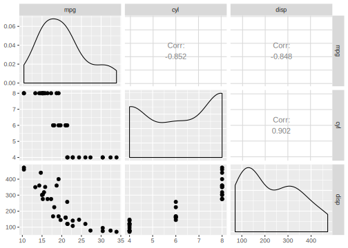

2.3 Tasks
Tasks are objects that include the data set and additional meta information about a machine-learning problem. This could be the name of the target variable for supervised problems or whether the data set belongs to a specific community of datasets (e.g. a spatial or survival dataset). This information can be used at different points of the workflow to account for specific characteristics of these dataset types.
2.3.1 Task Types
To create a task from a data.frame() or data.table() object, the task type needs to be selected:
- Classification Task: Target column is labels (stored as
character()/factor()) with only few distinct values.
\(\Rightarrow\)mlr3::TaskClassif - Regression Task: Target column is numeric (stored as
integer()/double()).
\(\Rightarrow\)mlr3::TaskRegr - Survival Task: Target is the (right-censored) time to event.
\(\Rightarrow\)mlr3survival::TaskSurvin add-on package mlr3surival - Ordinal Regression Task: Target is ordinal.
\(\Rightarrow\)mlr3ordinal::TaskOrdinalin add-on package mlr3ordinal - Cluster Task: You don’t have a target but want to identify similarities in the feature space.
\(\Rightarrow\) Not yet implemented - Spatial Task: The observations come with spatio-temporal information (e.g. coordinates).
\(\Rightarrow\) Not yet implemented in add-on package mlr3spatiotemporal
2.3.2 Task Creation
Let’s assume we want to create a simple regression task using the mtcars data set from the package datasets to predict the column "mpg" (miles per gallon).
For this showcase we only take the first two features to keep the output in the following examples compact.
data("mtcars", package = "datasets")
data = mtcars[, 1:3]
str(data)
## 'data.frame': 32 obs. of 3 variables:
## $ mpg : num 21 21 22.8 21.4 18.7 18.1 14.3 24.4 22.8 19.2 ...
## $ cyl : num 6 6 4 6 8 6 8 4 4 6 ...
## $ disp: num 160 160 108 258 360 ...Next, we create the task by providing the following information:
id: Identifier for the task, used in plots and summaries.backend: Here, we simply provide the dataset. It is internally converted to aDataBackendDataTable. For more fine-grain control over how the data is stored internally, we could also construct aDataBackendmanually.target: Column name of the target column for the regression problem.
library(mlr3)
task_mtcars = TaskRegr$new(id = "cars", backend = data, target = "mpg")
print(task_mtcars)
## <TaskRegr:cars> (32 x 3)
## Target: mpg
## Properties: -
## Features (2):
## * dbl (2): cyl, dispThe print() method gives a short summary of the task: It has 32 observations, 3 columns of which 2 columns are features.
We can also print the task using the mlr3viz package:
library(mlr3viz)
autoplot(task_mtcars, type = "pairs")
## Registered S3 method overwritten by 'GGally':
## method from
## +.gg ggplot2
2.3.3 Predefined tasks
mlr3 ships with some predefined machine-learning tasks.
These are stored in a R6 Dictionary, which is a simple key-value storage named mlr3::mlr_tasks.
If we simply print it out, we see that is has 9 entries:
mlr_tasks
## <DictionaryTask> with 9 stored values
## Keys: boston_housing, german_credit, iris, mtcars, pima, sonar, spam,
## wine, zooWe can obtain a summarizing overview of all stored tasks by converting the dictionary to a data.table() object
library(data.table)
as.data.table(mlr_tasks)
## key task_type nrow ncol lgl int dbl chr fct ord pxc
## 1: boston_housing regr 506 19 0 3 13 0 2 0 0
## 2: german_credit classif 1000 21 0 0 7 0 12 1 0
## 3: iris classif 150 5 0 0 4 0 0 0 0
## 4: mtcars regr 32 11 0 0 10 0 0 0 0
## 5: pima classif 768 9 0 0 8 0 0 0 0
## 6: sonar classif 208 61 0 0 60 0 0 0 0
## 7: spam classif 4601 58 0 0 57 0 0 0 0
## 8: wine classif 178 14 0 2 11 0 0 0 0
## 9: zoo classif 101 17 15 1 0 0 0 0 0To create a task from the dictionary (think of it as a book shelf), we use the $get() method from the mlr_tasks class and assign it to a new object.
For example, if we would like to use the iris data set for classification:
2.3.4 Task API
All task properties and characteristics can be queried using the task’s public member values and methods (see Task).
- Member values: Values stored in the object that can be queried by the user
- Member methods: Functions from the object that can accept arguments and return information stored in the object
# public member methods
task_iris$head(n = 3)
## Species Petal.Length Petal.Width Sepal.Length Sepal.Width
## 1: setosa 1.4 0.2 5.1 3.5
## 2: setosa 1.4 0.2 4.9 3.0
## 3: setosa 1.3 0.2 4.7 3.22.3.4.1 Retrieve Data
In mlr3, each row (observation) has a unique identifier which can be either integer or character.
These can be used to select specific rows.
The iris dataset uses integer row_ids:
# iris uses integer row_ids
head(task_iris$row_ids)
## [1] 1 2 3 4 5 6
# retrieve data for rows with ids 1, 51, and 101
task_iris$data(rows = c(1, 51, 101))
## Species Petal.Length Petal.Width Sepal.Length Sepal.Width
## 1: setosa 1.4 0.2 5.1 3.5
## 2: versicolor 4.7 1.4 7.0 3.2
## 3: virginica 6.0 2.5 6.3 3.3While the mtcars dataset uses names for its row_ids, encoded as character:
head(task_mtcars$row_ids)
## [1] "AMC Javelin" "Cadillac Fleetwood" "Camaro Z28"
## [4] "Chrysler Imperial" "Datsun 710" "Dodge Challenger"
# retrieve data for rows with id "Datsun 710"
task_mtcars$data(rows = "Datsun 710")
## mpg cyl disp
## 1: 22.8 4 108Note that the method $data() is only an accessor and does not modify the underlying data/task.
Analogously, each column has an identifier, which is often just called “column name”.
These are stored in the public slots feature_names and target_names.
Here “target” refers to the response variable and “feature” to the predictor variables of the task.
task_iris$feature_names
## [1] "Petal.Length" "Petal.Width" "Sepal.Length" "Sepal.Width"
task_iris$target_names
## [1] "Species"The row_id names and the “column names” can be combined for subsetting:
# retrieve data for rows 1, 51, and 101 and only select column "Species"
task_iris$data(rows = c(1, 51, 101), cols = "Species")
## Species
## 1: setosa
## 2: versicolor
## 3: virginicaTo extract the complete dataset from the task, we can simply convert the task to a data.table:
summary(as.data.table(task_iris))
## Species Petal.Length Petal.Width Sepal.Length Sepal.Width
## setosa :50 Min. :1.00 Min. :0.1 Min. :4.30 Min. :2.00
## versicolor:50 1st Qu.:1.60 1st Qu.:0.3 1st Qu.:5.10 1st Qu.:2.80
## virginica :50 Median :4.35 Median :1.3 Median :5.80 Median :3.00
## Mean :3.76 Mean :1.2 Mean :5.84 Mean :3.06
## 3rd Qu.:5.10 3rd Qu.:1.8 3rd Qu.:6.40 3rd Qu.:3.30
## Max. :6.90 Max. :2.5 Max. :7.90 Max. :4.402.3.4.2 Roles (Rows and Columns)
It is possible to assign a special meanings (aka “roles”) to (subsets of) rows and columns.
For example, the previously constructed mtcars task has the following column roles:
print(task_mtcars$col_roles)
## $feature
## [1] "cyl" "disp"
##
## $target
## [1] "mpg"
##
## $label
## character(0)
##
## $order
## character(0)
##
## $groups
## character(0)
##
## $weights
## character(0)Now, we want the original rownames() of mtcars to be a regular feature column.
Thus, we first preprocess the data.frame and then re-create the task.
# with `keep.rownames`, data.table stores the row names in an extra column "rn"
data = as.data.table(mtcars[, 1:3], keep.rownames = TRUE)
task = TaskRegr$new(id = "cars", backend = data, target = "mpg")
# we now have integer row_ids
task$row_ids
## [1] 1 2 3 4 5 6 7 8 9 10 11 12 13 14 15 16 17 18 19 20 21 22 23 24 25
## [26] 26 27 28 29 30 31 32
# there is a new "feature" called "rn"
task$feature_names
## [1] "cyl" "disp" "rn"The column “rn” is now a regular feature.
As this is a unique string column, most machine-learning algorithms will have problems to process this feature without some kind of preprocessing.
However, we still might want to carry rn around for different reasons.
For example, we can use the row names in plots or to associate outliers with the row names.
This being said, we need to change the role of the row names column rn and remove it from the set of active features.
task$feature_names
## [1] "cyl" "disp" "rn"
task$set_col_role("rn", new_roles = "label")
# "rn" not listed as feature any more
task$feature_names
## [1] "cyl" "disp"
# also vanished from "data" and "head"
task$data(rows = 1:2)
## mpg cyl disp
## 1: 21 6 160
## 2: 21 6 160
task$head(2)
## mpg cyl disp
## 1: 21 6 160
## 2: 21 6 160Note that no copies of the underlying data is inflicted by this operation. By changing roles, only the view on the data is changed, not the data itself.
Just like columns, it is also possible to assign different roles to rows. Rows can have two different roles:
- Role
"use": Rows that are generally available for model fitting (although they may also be used as test set in resampling). This is the default role. - Role
"validation": Rows that are held back (see below). Rows which have missing values in the target column upon task creation are automatically moved to the validation set.
There are several reasons to hold some observations back or treat them differently:
- It is often good practice to validate the final model on an external validation set to uncover possible overfitting.
- Some observations may be unlabeled, e.g. in data mining cups or Kaggle competitions. These observations cannot be used for training a model, but you can still predict labels.
2.3.4.3 Task Mutators
Task methods .$set_col_role() and .$set_row_role() change the view on the data and can be used to subset the task.
For convenience, method .$filter() subsets the task based on row ids, and .$select() subsets the task based on feature names.
All these operations only change the view on the data, without creating a copy of it, but modify the task in-place.
task = mlr_tasks$get("iris")
task$select(c("Sepal.Width", "Sepal.Length")) # keep only these features
task$filter(1:3) # keep only these rows
task$head()
## Species Sepal.Length Sepal.Width
## 1: setosa 5.1 3.5
## 2: setosa 4.9 3.0
## 3: setosa 4.7 3.2Additionally, methods .$rbind() and .$cbind() allow to add extra rows and columns to a task, respectively.
Again, the original data set stored in the original DataBackend is not altered in any way.